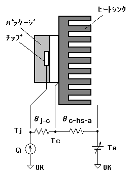

今更言うまでもありませんが、放熱器とは機器で発生する熱を外部に伝えることにより温度上昇を抑えるための部品を言います。ここでは、特に電子部品に取り付けて放熱を促すためのもの(いわゆるヒートシンク)について説明しましょう。
いきなり熱抵抗などという用語が出てきましたが、これが放熱設計の基になるので最初に説明しておきます。簡単に言うと、熱抵抗θとは熱の伝わりにくさのことで、単位は[℃/W]です。熱抵抗が低いほど熱が伝わりやすいと言えます。熱抵抗とその関連項目は次のように、電気回路の要素に置き換えて考えることができます。
| 発熱量 Q [W] → 電流 I [A] |
| 温度差 ΔT [℃] → 電位差 E [V] |
| 熱抵抗 θ[℃/W] → 電気抵抗 R [Ω] |
このようにモデル化することにより放熱設計にオームの法則が適用できるので、直感的に理解できると思います。例えば、ある絶縁フィルムの表と裏の間に温度差を与えたとします。すると、温度が高い方から低い方へ熱が伝わります。温度差 1℃ のとき 1W の熱がフィルムを伝わっているとすれば、このフィルムでの熱抵抗は 1℃/W です(素材固有の熱抵抗とは別)。厚さを2倍にすれば直列接続で熱抵抗2倍、面積を2倍にすれば並列接続で熱抵抗1/2といった感じです。
電子部品内部で発生した熱は、いろいろな経路を経て最終的には大気に伝わってゆきます。たとえば、パワートランジスタの場合、半導体チップ(j)→パッケージ(c)→ヒートシンク(hs)→大気(a)といった感じです。熱抵抗は熱が伝わる経路の素材すべてに存在します。そして、パワーデバイスの場合、発生した熱のほとんどはヒートシンクに伝わっていくので、半導体チップから大気までの熱抵抗は途中の物を全て加算したものとなります。
さて、それでは実際に簡単な放熱計算をしてみます。発熱量(消費電力)と許容温度上昇は最初に決まっていることが多いので、半導体素子の温度を許容値以下に抑えるために必要なヒートシンクの選定作業となります。仮に条件を次のように設定して必要なヒートシンクを算出してみます。発熱量と周囲温度はワーストケースを想定します。実際には、TO-220パッケージに10Wも食わすような使い方はしないですけど。
| 最大発熱量 | 10W |
| 最大周囲温度 | 50℃ |
| トランジスタ | 最大定格: Pc=50W(Tc=25℃), Tj=150℃、外形: TO-220 |
| その他部品 | マイカシート、シリコングリス使用 |
最初に半導体素子から外気までに要求されるトータルの熱抵抗を計算します。条件から素子から外気までの温度差 Tj-aは100℃、発熱量 Qは10Wとなります。したがって、トータルの熱抵抗(θj-a)は、θ = ΔT / Qより、100℃ / 10W = 10[℃/W]以下でなければならないということになります。ちなみに、Tjはチップ(junction)温度、Tcはパッケージ(case)温度、Taは大気(atmosphere)温度のことです。
次に、要求されるトータルの熱抵抗から半導体素子−ヒートシンク間の熱抵抗を差し引きます。半導体素子−パッケージ間と、パッケージ−ヒートシンク間の熱抵抗がこれにあたり、それらを引いて、残った熱抵抗がヒートシンクに要求される性能となります。
まず、半導体素子−パッケージ間(θj-c)。これはそのトランジスタのデータシートに記載されていることが多いですが、不明な場合は次のように算出します。
θ = ΔT / Q より、θj-c = Tj-c / Q = (150-25) / 50 = 2.5[℃/W]
次に、パッケージ−ヒートシンク間(θc-hs)。これは、パッケージとヒートシンクの接触部での熱抵抗で、その組み立て状態により変わります。例えば、TO-220パッケージの場合は大体次のようになるようです。
| マイカシート | シリコングリス なし | シリコングリス あり |
| なし | 2.0℃/W | 0.5℃/W |
| あり | 5.0℃/W | 2.5℃/W |
この例では、マイカシートで絶縁、シリコングリス使用となっているので、2.5[℃/W]となります。これで、半導体素子からヒートシンクまでの熱抵抗が求まりましたので、トータルで要求される熱抵抗（θj-a）からこれらの値を引きます。すると、
θj-a - θj-c - θc-hs = 10 - 2.5 - 2.5 = 5
となり、必要とされるヒートシンクの性能は5[℃/W]以下ということになります。ただし、このように計算した値はこの点で破壊に至るという限界値であって、実際にはこれを元にして十分なマージンを持たせたヒートシンクを選択するのは言うまでもありません。最近はマイカシートはすっかり廃れ、作業性の良いシリコンラバーシートが主流になっています。ゴム質で密着性が良いのでシリコングリスが不要になりますが、熱抵抗が高いのが欠点です。最近のTO-220パッケージは金属部が樹脂でフルモールドされたものが増え、それらは絶縁シートが不要（シリコングリスは必要）です。
瞬時的な発熱量が設計値を越えたとしても、それが短時間なら許容されることもあります。半導体チップ、パッケージ、ヒートシンクはそれぞれ熱容量を持っているからです。これは、RCネットワークとしてモデル化でき、主に間欠動作や過渡動作での熱設計に有効です。なお、発熱が間欠的であっても、それが熱時定数に対して十分高速な場合（スイッチング電源など）は、発熱を平均化して直流動作として扱います。
ヒートシンクの熱は、主に空気の対流によって大気中に拡散していくので、うまく対流が起こるようにヒートシンクを配置しないと、熱抵抗が上がってしまいます。例えば、ヒートシンクのひだが垂直になるように取り付けるべきものを横向きに置いたりすると、熱抵抗は1.5倍程にもなってしまうのです。自然空冷ではうまく空気の対流が起こるようにレイアウトに工夫し、ヒートシンクの上下に気流を妨げるものを配置しないようにする必要があります。
ファンなどで強制的に空気の対流を起こしてやることにより、ヒートシンクの熱抵抗を大幅に下げることができます。これを強制空冷といいます。セット内部の換気も兼ねることにより周囲温度も下げるなど、放熱性能を飛躍的に高めることが可能になります。また、強制空冷ではヒートシンクの配置が自由になります。
しかし、外気を取り込むことにより埃がヒートシンクなどに付着して熱抵抗が上がったり、ファンの騒音や寿命といった欠点もあります。このため、強制空冷のセットでは定期的なメンテナンスが欠かせません。